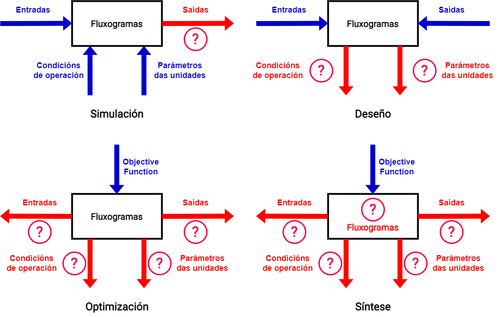
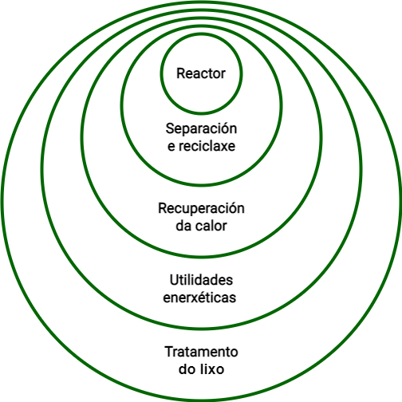

flowchart TD A[Inicio] --> B[Modelado] B --> C[Entrada de Datos] C --> D[Simulación] D --> E[Visualización] E --> F[Análise] F --> G[Optimización] G --> H[Aplicación] H --> I[Fin]
Introdución á Simulación de Procesos
Aplicación á Enxeñaría Química
Introdución
Resumo das clases teóricas
| Conceptos | Nivel |
|---|---|
| Fundamentos da simulación de procesos | Básico |
| Introdución á simulación de procesos | Básico |
| Rexistro de novos compoñentes | Básico |
| Estimación de propiedades físicas para simulación de procesos | Básico |
| Simulación de correntes de reciclado | Básico |
Simulación de procesos
A simulación de procesos é unha técnica computacional empregada en varias industrias para:
- Modelar
- Analizar e
- Optimizar procesos complexos.
- Implica a creación dunha representación ou modelo dixital dun sistema ou proceso real para simular o seu comportamento en diferentes condicións.
Qué implica a simulación de procesos?
A simulación de procesos consiste en varias operacións ou tarefas como se mostra no seguinte gráfico
Etapas sa simulación de procesos
Modelado
A simulación de procesos comeza coa creación dun modelo matemático ou computacional que representa:
- Os compoñentes
- As variables e
- As interaccións clave dun proceso físico.
Este modelo pode basearse en:
- Ecuacións matemáticas
- Datos empíricos
Ou unha combinación de ambos.
Simulación
Unha vez que o modelo se desenvolve, impleméntase no software de simulación. O software usa algoritmos para: - Realizar cálculos numéricos - Resolver ecuacións para simular o comportamento do proceso ao longo do tempo.
Parámetros de entrada
Os usuarios poden introducir varios parámetros: - Condicións de funcionamento - Especificacións de equipos - Variables de proceso, etc.
para explorar diferentes escenarios e estudar como os cambios afectan o proceso.
Visualización
O software de simulación de procesos adoita proporcionar representacións visuais de: - O proceso simulado, incluíndo - gráficos - animacións.
Isto permite aos usuarios obter información sobre o rendemento e o comportamento do sistema.
Análise
Os usuarios poden analizar os resultados da simulación para avaliar: - A eficiencia - O rendemento - A seguridade do proceso.
Esta análise axuda a: - Identificar posibles bloqueos de botella - Optimizar o uso de recursos - Mellorar o deseño xeral do proceso.
Optimización
A simulación de procesos pódese usar para atopar o conxunto óptimo de: - parámetros ou -condicións
que leven ao resultado desexado, tales como: - Maximizar o rendemento da produción ou - Minimizar o consumo de enerxía. ## Aplicacións:
A simulación de procesos se utiliza en diversas industrias, incluyendo la ingeniería química, la manufactura, el petróleo y el gas, la farmacéutica y el transporte, para modelar y mejorar procesos como reacciones químicas, líneas de producción, cadenas de suministro, entre otros.
Beneficios:
A simulación de procesos pode levar a:
- Un aforro de custos
- Unha mellor calidade do produto
- Unha redución de riscos
- Unha maior seguridade de produción
permitindo probas virtuais e optimización antes de implementar cambios nos procesos do mundo real.
Fluxogramas
Alexander C. Dimian (2003)
- O diagrama de fluxo é unha descrición sistémica de fluxos de materiais e enerxía en a planta de proceso mediante simulación informática co ámbito de proxectar unha nova planta ou mellorar o rendemento dunha planta existente.
- O diagrama de fluxo pode usarse como axuda para implementar un control en toda a planta estratexia, así como para xestionar o funcionamento da planta.
Simulación - Deseño - Optimización e Síntese de Procesos Químicos

Modelo de deseño de capas da cebola (Linnhoff)

[Modelo de capa d]
Dentro da síntese de procesos, un dos modelos importantes para guiar o fluxo a síntese é o modelo de cebola informado por primeira vez en Linnhoff et al. (1982). Como se mostra na figura 1.3, o exercicio de deseño de procesos comeza desde o núcleo do proceso e móvese cara a fóra. No centro da cebola, deseñase primeiro o sistema do reactor. O deseño do reactor inflúe nas estruturas de separación e reciclaxe segunda capa da cebola. A continuación, as estruturas do reactor e do separador ditan o requisitos xerais de calefacción e refrixeración do proceso. Polo tanto, o sistema de recuperación de calor deséñase a continuación, na terceira capa. Un sistema de utilidade no cuarto A continuación deséñase a capa para proporcionar requisitos adicionais de calefacción e refrixeración, que non se poden satisfacer mediante un sistema de recuperación de calor. Na capa final, o O sistema de tratamento de residuos está deseñado para xestionar varias emisións/efluentes o proceso, previo á descarga ambiental final. Nunha sección posterior deste capítulo, empregarase o modelo de cebola para guiar a simulación do fluxo integrado de procesos químicos.
Resumo
A simulación de procesos é unha poderosa ferramenta que permite a proba virtual e a análise de procesos complexos, facilitando a decisión e a optimización nunha ampla gama de industrias.
Simuladores de Procesos
Arquitectura de simuladores de proceso
- Modular secuencial
- Baseado no concepto de modularidade, que estende o concepto da enxeñaría de operación unitaria a un cálculo da unidades de operación mediante un o código informático responsable do cálculo das unidades de proceso.
- O cálculo de todo o fluxograma se fai unidade a unidade seguindo unha secuencia de cálculo.
- Baseado no concepto de modularidade, que estende o concepto da enxeñaría de operación unitaria a un cálculo da unidades de operación mediante un o código informático responsable do cálculo das unidades de proceso.
- O orientado á ecuacións (Simultáneameo - Non modular)
- O modelo completo do fluxograma exprésase en forma dun gran sistema disperso de ecuacións alxébricas non lineais, que se solucionan simultaneamente para todas as incógnitas.
- Modular Simultáneo Combinación de secuencial-modular e orientado á ecuación enfoques
Simuladores de procesos Comerciais para Estado Estacionario
- Sequenciais – Modulares
- Aspen Plus
- Aspen Hysys
- ChemCAD
- PRO II
- UniSim
Simuladores de procesos Comerciais para Estado Estacionario
- Orientados a Ecuación
- gProms
- VMGSim
- Aspen Plus in EO
- Aspen Custom Modeler
Simuladores de Procesos para Estado Estacionaro Gratiutos
- Orientados a Ecuacións
- DWSIM
- COCO
- Secuenciales – Modulares -ASCEND ## Simuladores Secuandiais - Modulares
flowchart TD
A(Interface gráfica de usuario) <--> B[Entrada]
B <--> D[Programa Executivo]
A <--> C[Saída]
A <--> D
C <--> D
D <--> E[[Biblioteca de Unidades de Operación]]
D <--> F[[Métodos Termodinámicos]]
D <--> G[[utinas numéricas]]
H(Bases de datos de coste e dimensións) --> E
I(Bases de datos de Propiedades Físicas) --> E
Servizos de propiedades físicas
- Subministran estimacións para varias propiedades físicas diferentes mentres a simulación está funcionando.
- O equilibrio de fase representa unha das propiedades físicas máis importantes, xa que moitas simulacións de procesos químicos implican destilación, separación, evaporación ou separación líquido - líquidos.
- Resolven os balances de masa e enerxía para estas operacións que require a predicción:
- Vapor - Equilibrio líquido (VLE)
- Líquido - Equilibrio líquido (LLE)
Note
- A estimación de propiedades físicas pode consumir ata o 90% do tempo de computación dunha simulación. Os paquetes de propiedades úsanse para predecir o equilibrio de fase e o comportamento de compoñentes puros e sistemas de mestura